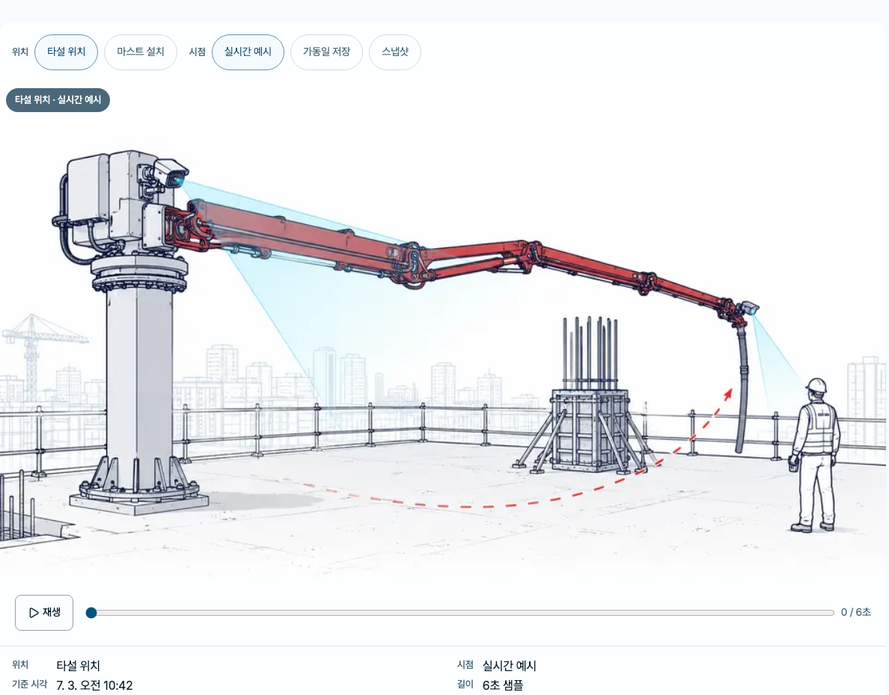
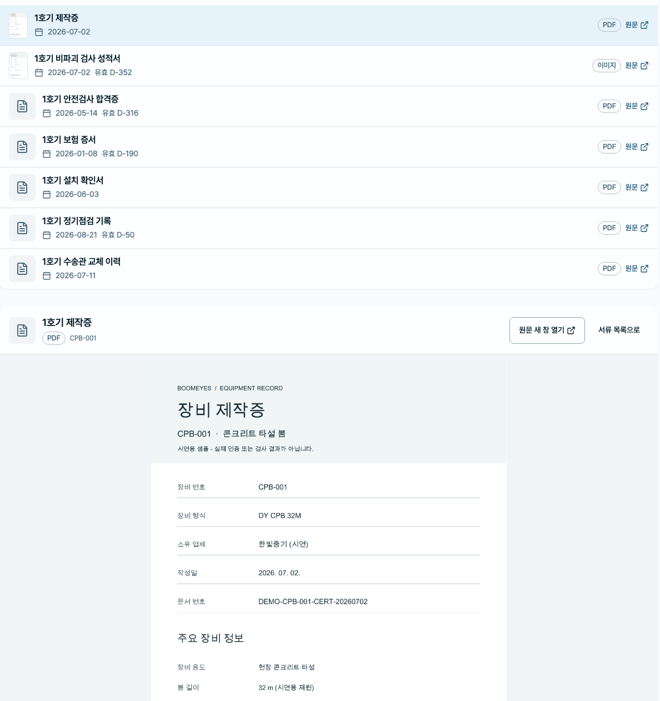
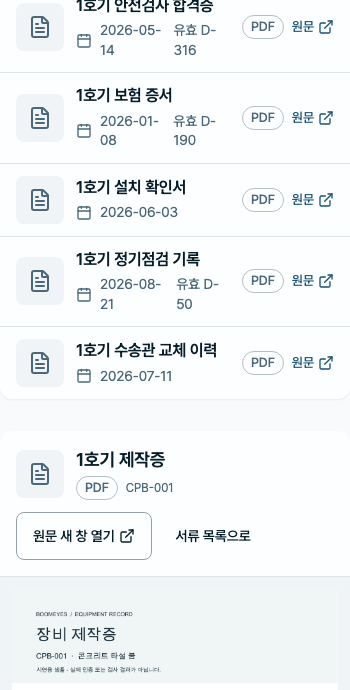
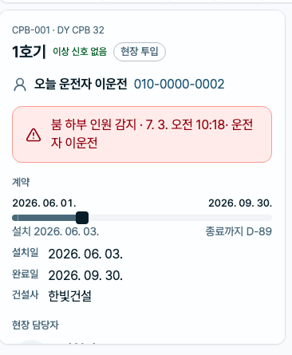
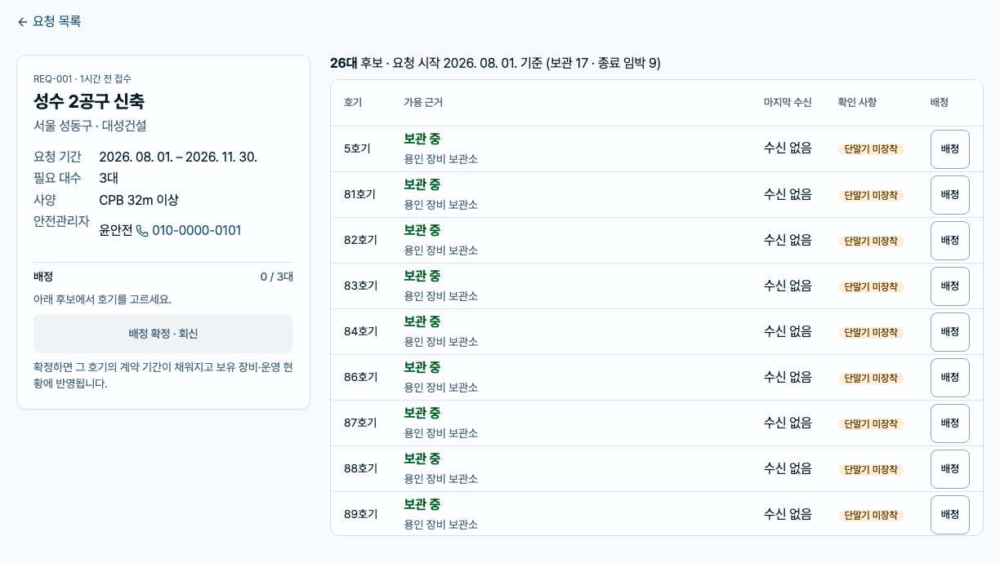

01 / 소유주 데모
내 장비를 어떻게 관리하나요?
아이디와 비밀번호로 로그인합니다.
시연에서는 데모 계정으로 로그인을 눌러 소유주 계정으로 들어갑니다.
다음 화면: 운영 현황 — 전국
02 / 운영 현황 — 전국
어느 현장과 장비부터 확인할까요?
전국 지도에서 확인이 필요한 현장을 고릅니다.
상태 띠로 가동·고장·점검·지연·보관 대수를 읽고, 현장마다 놓인 원(원 안의 수가 그 현장의 대수)을 봅니다. 왼쪽 카드는 확인이 필요한 현장부터 보이고 「전체 N개 현장」으로 펼칩니다.
다음 화면: 운영 현황 — 현장
03 / 운영 현황 — 현장
이 현장의 호기는 어디에 어떤 상태로 있나요?
현장 지도에서 호기의 위치와 상태를 봅니다.
현장으로 들어가면 지도는 그 현장 배율이 되고 핀은 호기 한 대씩입니다. 왼쪽 카드에 건설사·임대 기간·현장 담당자와 투입 호기 목록이 옵니다.
다음 화면: 운영 현황 — 호기
04 / 운영 현황 — 호기
이 호기는 지금 어떤 상태이고 누가 맡고 있나요?
호기를 눌러 카메라 여섯 화면과 호기 정보를 봅니다.
호기 화면은 하나입니다 — 지도·목록·알림·운전자 어디서 들어와도 같은 화면이 열립니다. 지도 자리를 카메라 6분할이 대신하고, 왼쪽 카드에 오늘 운전자·AI 경고·계약·담당자·지표·마지막 수신값·이상 이력·차량 서류·현장 영상이 이어집니다. 보관 중이라는 표시만으로 투입 가능 여부를 판단하지 않습니다.
다음 화면: 보유 장비
05 / 보유 장비
찾는 호기가 어디에 있나요?
호기 또는 현장명으로 검색하고 장비를 선택합니다.
이상이 있는 장비뿐 아니라 정상 장비와 보관 장비도 같은 목록에서 찾습니다. 표 위 오른쪽 요약(투입·고장·점검·수신 지연·보관)의 수를 누르면 그만큼만 남고, 현장 칸의 둘째 줄에서 지역과 건설사를 함께 읽습니다.
다음 화면: 계약
06 / 계약
이 기간에 낼 수 있는 장비가 있나요?
현장이 보낸 투입 요청을 열고 후보 호기를 배정합니다.
소유주의 판단은 «이 기간에 낼 수 있는 장비가 있나» 하나입니다. 후보는 보관 중이거나 요청 시작 전에 계약이 끝나는 호기에서 나오고, 필요 대수를 채워야 배정을 확정합니다. 확정하면 그 호기의 계약 기간이 채워집니다.
다음 화면: 운전자
07 / 운전자
오늘 이 호기는 누가 운전하나요?
소속 운전자와 오늘 배정을 확인합니다.
배정은 매일 바뀝니다. 오늘 어느 호기에 누가 올라가는지, 자격 만료가 임박한 사람이 있는지 한 화면에서 봅니다.
다음 화면: 운전자 서류
08 / 운전자 서류
운전자 자격이 유효한가요?
운전자 서류 네 종의 만료와 미비를 확인합니다.
서류는 두 갈래입니다. 차량 서류는 호기에, 자격 서류는 사람에 속합니다. 없는 서류는 빈칸이 아니라 미비로 드러납니다.
다음 화면: 영상
09 / 영상
타설·설치 상황과 저장 영상을 볼 수 있나요?
타설 위치와 마스트 설치를 선택하고 가동일 저장을 재생합니다.
영상의 용도와 시점을 따로 선택합니다. 화면의 시연 표시는 6초 샘플임을 뜻하며, 저장 영상은 끝에서 멈춥니다.
다음 화면: 장비 서류
10 / 장비 서류
필요한 제작증과 검사 성적서를 열 수 있나요?
선택한 호기의 제작증과 검사 성적서 원문을 엽니다.
문서 안의 장비 번호와 화면의 호기가 같은지 확인합니다. 시연 파일은 내용을 미리 본 뒤 첨부하며, 새로고침하거나 로그아웃하면 초기화됩니다.
다음 화면: 이상·점검
11 / 이상·점검
어떤 장비에 연락과 점검이 필요한가요?
알림의 대상 호기를 확인한 뒤 호기 화면에서 연락 정보를 봅니다.
알림을 읽었다는 표시와 장비 문제가 해소됐다는 판단을 구분합니다. 대상 장비와 현장 연락처를 확인하는 흐름을 마칩니다.
다음 화면: 보유 장비
영상의 재생과 시간 조작
같은 호기의 실제 화면 확대

1호기 제작증 원문
같은 호기의 실제 화면 확대

휴대폰에서 제작증 원문 열람
같은 호기의 실제 화면 확대

호기 화면의 카드 — 오늘 운전자·AI 경고·계약
같은 호기의 실제 화면 확대

계약 배정 — 요청과 후보 호기
같은 호기의 실제 화면 확대

시연 조건
- 이 문서는 내부 검토용 초안입니다. 고객 확인은 아직 진행하지 않았습니다.
- 호기 화면의 카드는 제 상자 안에서 스크롤합니다. 화면 캡처에는 첫 화면만큼만 담기므로, 카드 아래로 이어지는 지표·이상 이력·차량 서류·현장 영상은 문서에서 글로만 설명합니다.
- 장비·계약·연락처와 원문 서류는 시연용 예시입니다. 실제 인증이나 검사 결과를 대체하지 않습니다.
- 보관 중인 장비가 즉시 투입 가능한 장비를 뜻하지는 않습니다.
- 수신 지연·미연동·단말기 미장착은 구분하며, 과거 측정값에는 마지막 수신 시각을 표시합니다.
- 영상은 실제 현장 스트림이 아닌 6초 샘플입니다. 저장 정책과 실제 장비 연동은 별도 확인 대상입니다.
- 시연용 첨부는 현재 브라우저 메모리에만 남습니다. 새로고침·로그아웃 시 초기화되고 오프라인에서는 첨부하지 않습니다.
부록 · 원문 근거와 빌드 기록
2026-09-08 V5 · 관제기능 시트
| 화면 | 원문 셀 | 검토 코드 (PC / 폰) |
|---|---|---|
| 소유주 데모 | M39, H39:H40 | B0-01 / A4-01 |
| 운영 현황 — 전국 | H70, H76 | B1-02 / A4-07 |
| 운영 현황 — 현장 | H70, H76 | B1-02 / A4-07 |
| 운영 현황 — 호기 | H70, H76 | B1-02 / A4-07 |
| 보유 장비 | I9:N25, H71, H77 | B1-09 / A4-02 |
| 계약 | H60:H68 | B1-13 / A4-03 |
| 운전자 | H36 | B1-14 / A4-04 |
| 운전자 서류 | H36 | B1-15 / A4-06 |
| 영상 | H47:H55, H72:H73, H78:H79 | B1-11 / A4-09 |
| 장비 서류 | H36, H74, H80 | B1-05 / A4-10 |
| 이상·점검 | H37:H38, H60:H68 | B1-12 / A4-11 |
전체 자동 캡처 192 / 192(운영 현황은 전국·현장·호기 3단계). 고객 확인은 아직 진행하지 않았습니다.
소스 커밋 bf334faa1ad3d46d799dbcf2bd82bfd25a5e6c32
작업 내용 해시 d2f59403ae774772909cf2cdefb0ac2f9dc83e7986e81bc91c7e5e7f5a9e19c8
원천 해시 5830cb16923e003dedb6ef6f5e0adb92412190c750acfb3eccc72de0c743ef0a